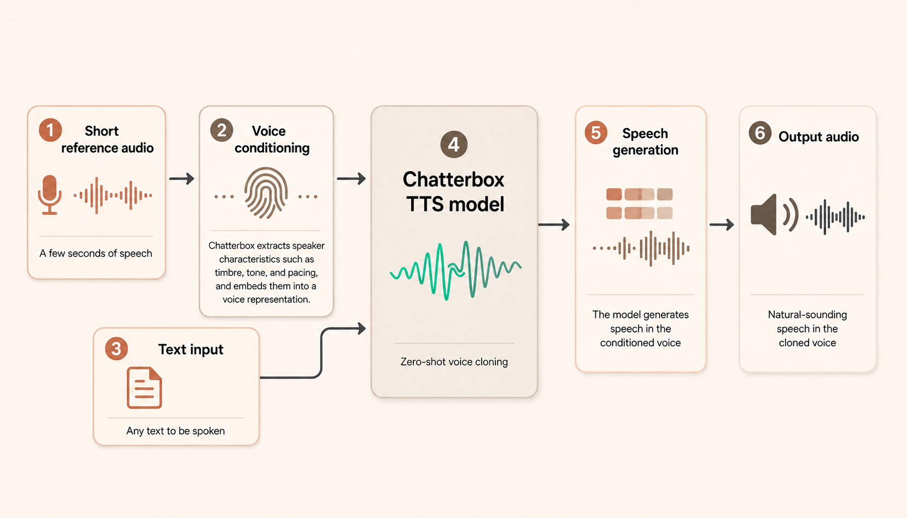
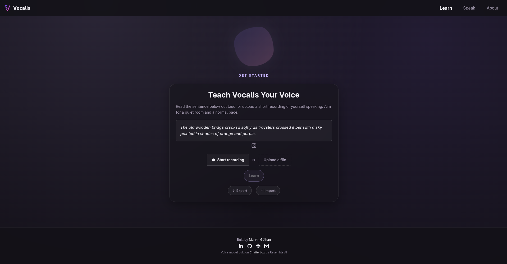
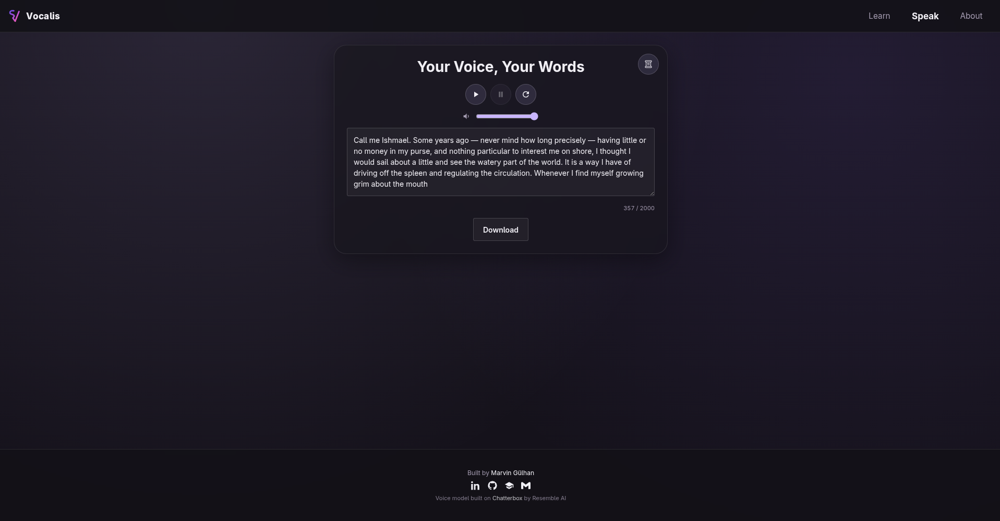
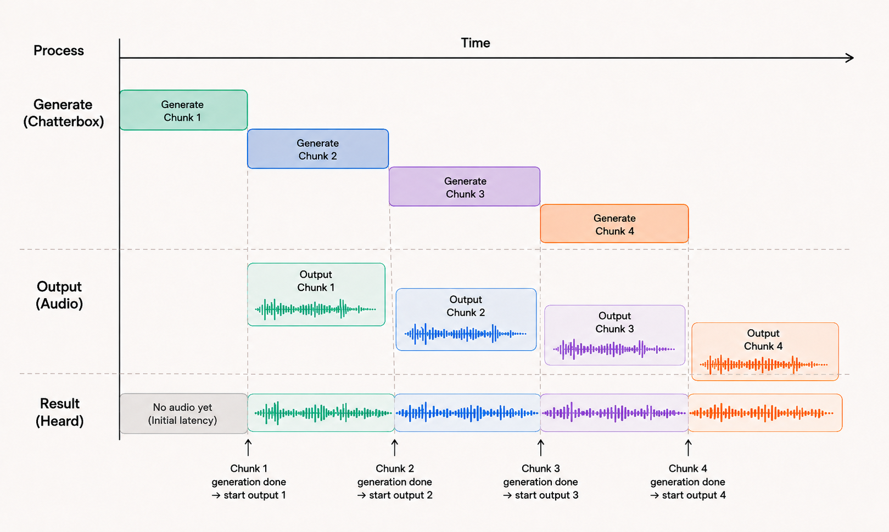

Back when I was in school (around 2021), I remember writing a term paper on how AI can be used in the area of Speech synthesis. Back then state of the art was Google with its WaveNet. I also wrote about some applications and how it could become interesting for people suffering from aphonia, the loss of one's voice, but who still have old recordings of it. In that way voice cloning could be used to give them back their voice.
That idea stuck around a lot longer than the term paper did. Of course now we have reached a point where voice cloning is more accessible than ever and low-latency models are becoming available, but often only for paid users. A few weeks ago I ran into a video about Pocket TTS, Kyutai's tiny CPU-only voice cloning model, and after a break from it, I came back to voice synthesis. I decided to look for an open source model that can actually clone a voice well today. That search led me to Chatterbox by Resemble AI, and it's genuinely impressive, zero-shot cloning from a handful of seconds of audio, no training run needed, and with a quality that arguably holds up against closed-source competitors.
But it's a model repo, not something you could hand to someone with almost no understanding of programming. There's no real interface, generation is one blocking call with a hard ceiling on how much text it can produce at once, and nothing about it is built for the kind of back-and-forth, conversational use I had in mind, like live translation. I couldn't find anything else filling that gap, so that's what the Vocalis project is about. It's essentially a wrapper around Chatterbox, built into an application anyone should be able to self-host, that can generate speech with low enough latency over long texts. It is open source and self-hostable, because the whole point of the idea, letting people generate text in their own voice, is only meaningful if they don't have to pay for it and can actually run it themselves rather than trusting it to a third party. Of course in an optimal scenario I would make it applicable to anyone via a web service, but that would require a lot more resources than I have available.

Learn, then speak
Vocalis is built around two pages that mirror how you'd actually explain the idea to someone. On Learn, you record yourself reading a prompted sentence, or upload a short clip, and hit "Learn." Under the hood that sample gets turned into a voice conditioning, a fingerprint of tone, pacing, and timbre that Chatterbox uses to generate anything in that voice afterwards, and it's cached so it survives a server restart. You can also export that conditioning and import it back later, or on a different machine, without re-recording, which matters a lot if the whole premise is "this is yours, keep it."
On Speak, you type (or upload a text file of) whatever you want to hear, and Vocalis reads it back in the learned voice. It's a small self-hosted web app end to end, with the model warmed up once at startup so the first real person to use it isn't the one paying for that cost.


Getting to low latency without losing quality
This is where most of the actual work went, and where the "self-hosted UI over Chatterbox" framing stops being enough on its own. Chatterbox generates a fixed amount of tokens per call, so typing a whole paragraph and hitting generate just fails past a certain length, and even under that limit, you sit staring at a spinner for however long the entire block takes before hearing a single word. That's the opposite of what a voice that's supposed to feel like yours should do, and it's a non-starter for the live-translation use case that started all this, where every second of dead air breaks the illusion that you're talking, not waiting for a server.
So instead of one request per submission, Vocalis splits the input into sentence-sized chunks (never mid-sentence, that sounds wrong) and generates them one at a time. Rather than waiting for everything before playing anything, playback starts the moment chunk one is ready, while the rest keep generating quietly in the background and get scheduled in gaplessly right after, so it comes out as one continuous voice instead of a string of separate clips. The first chunk is the hardest part to get down, since it has to fully generate before there's anything to play at all. Every chunk after that is easier, because its generation overlaps with the previous chunk's playback, so as long as generation doesn't fall too far behind playback speed, later chunks are already waiting by the time they're needed.

Speed on its own wasn't the goal, it only counts if the voice still sounds like the person who recorded it. Generating each chunk independently introduces small inconsistencies, in loudness for instance, so there's some cleanup done on the audio before playback and before it gets stitched into a downloadable file, so the seams don't give away that it was ever cut apart.
What's next
For now I have a working prototype that can be run locally, and I'm still working on making it more robust and user-friendly. The next steps will be mainly focused on improving the low-latency generation and playback, since these are the hardest parts to get right. Getting latency to a point where it feels like a real-time conversation is the ultimate goal. Initial latency, how long it takes before the very first sound plays, is still the main issue, and getting a good tradeoff between chunk generation length and output length is a task I haven't fully solved yet. Beyond the generation side, I'm also trying to keep installation as automatic as possible, so that self-hosting Vocalis doesn't mean wrestling with setup, ideally close to no manual configuration at all.